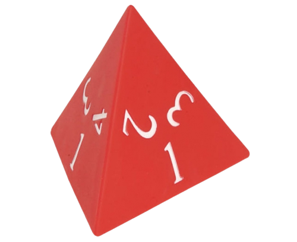
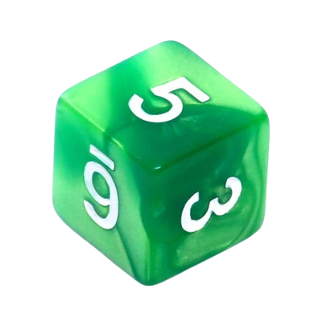

You begin the game as a party of five characters - Jedi Masters Obi Wan Kenobi and Anakin Skywalker, along with their padawans - Ahsoka Tano and Jason Thorne and their new foundling Jared. Each character has a certain set of skills that are gonna be useful during the game.
During their mission your party encounters different enemies. In order to fight them, you may plan your attack. You may roll the dice and choose a character to the fight according to the results.
You have a set of two dice that you roll simultaneously upon clicking the "Roll Dice" button. One die is a cube and the other one is a tetrahedron. Remember that when you decide to roll the dice, so does your enemy!
The tetrahedron decides on the skill that will be used in the upcoming attack. Upon rolling one - the sill is intelligence, upon rolling two - the skill is stealth and upon rolling 3 - the skill is force.
The cube die is used to determine the strength of your attack. The number on the dice is automatically multiplied by the value of the drawn skill upon clicking the "Attack" button. Before attacking you may decide to change the active character
to the one that has the highest value in the drawn skill (or you can choose them using different criteria), but remember, once your character's health value reaches zero, they are dead and therefore yoiu won't be able to use them to fight
anymore.

Tetrahedral die - used to determine which of the fours skills will be used in the next attack: strength, force, intelligence, stealth
Cubic die - used to determine the strength of the upcoming attack
Short instructions: